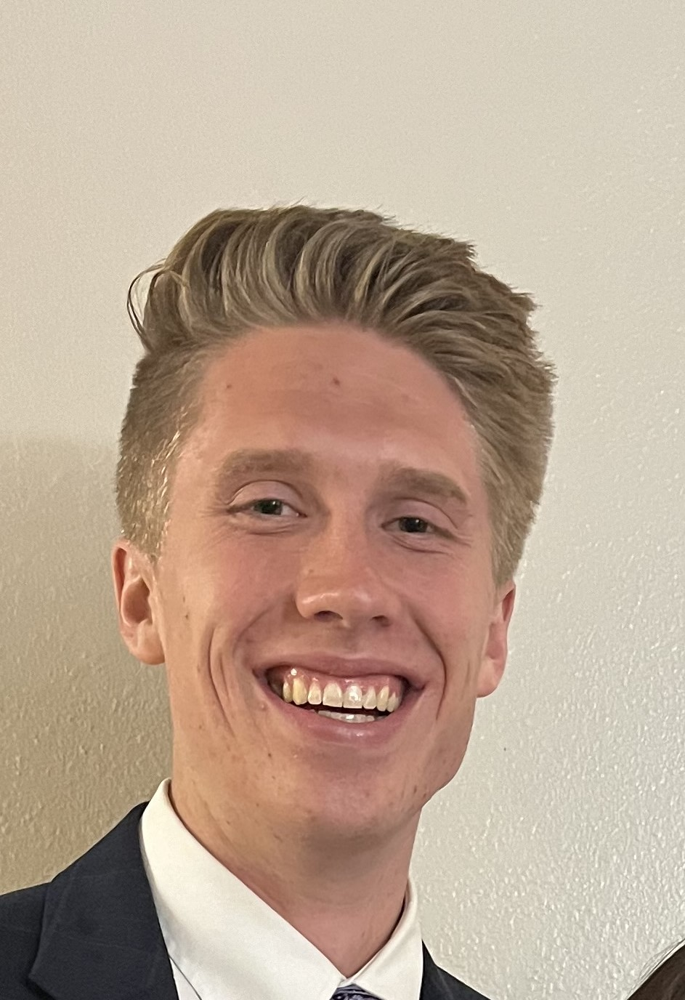
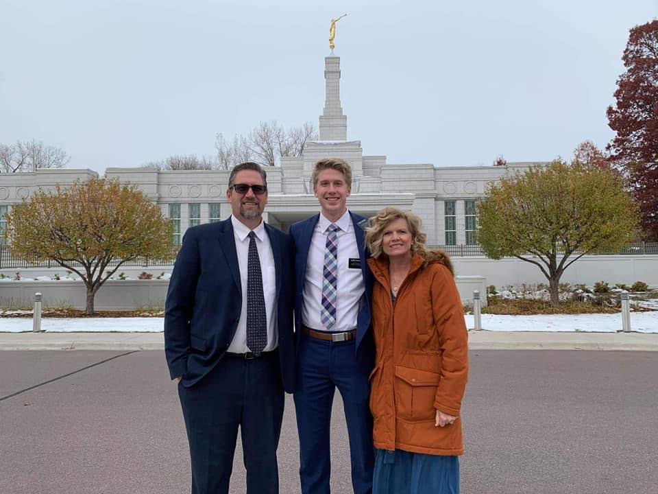
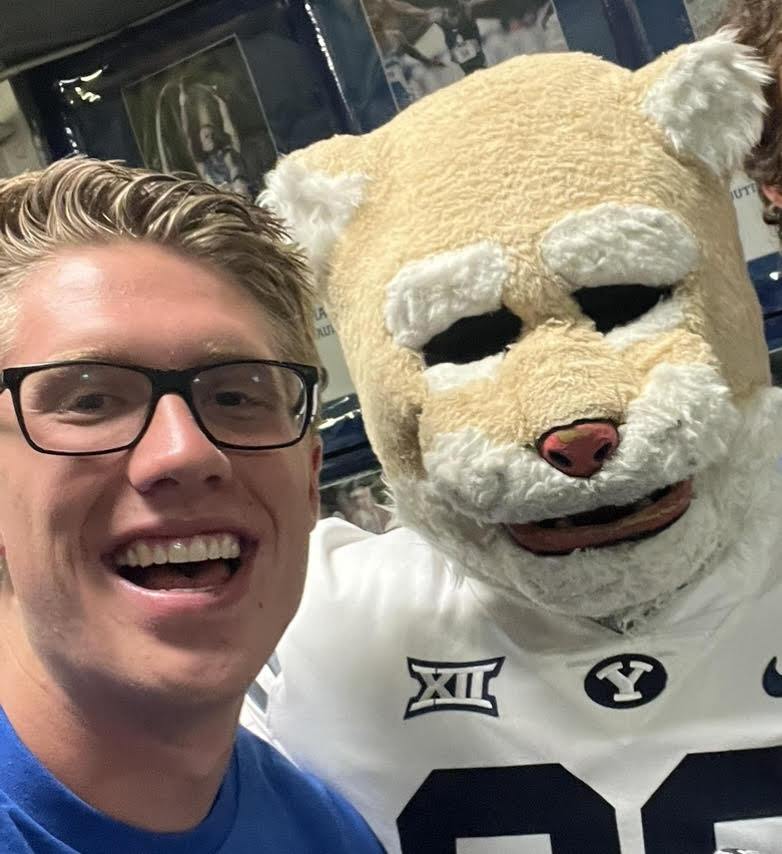
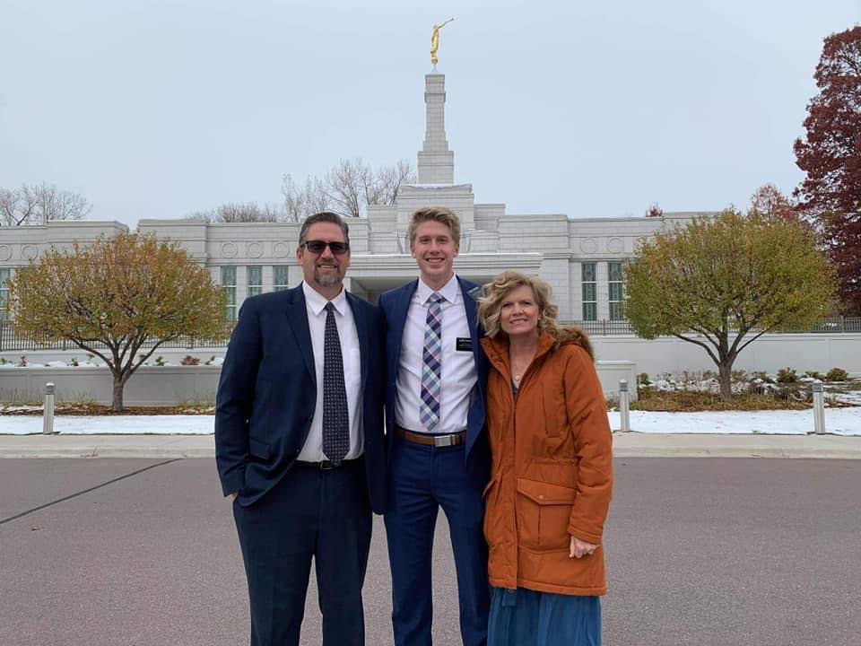
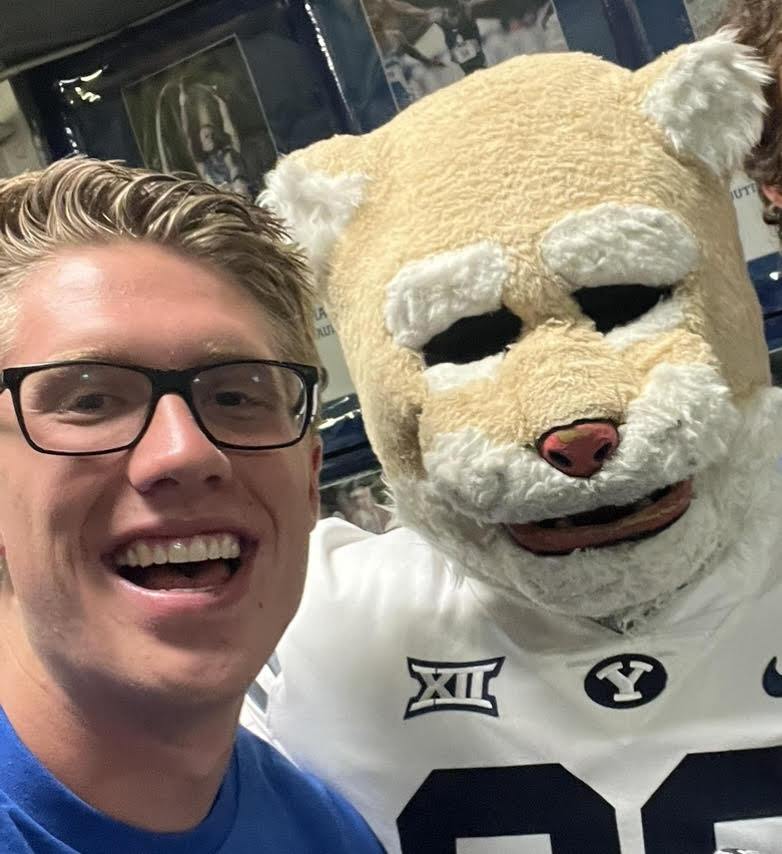

The Photographer
 



Noah Sowards is a younger brother, older brother, uncle, and firm advocate of loving God and loving neighbor. Born in small town Manassa, CO, Noah grew up helping grandpa on the ranch. After returning home from a mission for The Church of Jesus Christ of Latter-day Saints, a passion for photography began to develop.
During his spare moments of not taking pictures, Noah attends Brigham Young University, spends time with family and friends, and plays the guitar. Noah is pursuing a degree in finance and loves seeking out things that are inspiring.
One of Noah's Favorite Inspirational Videos
Personal Finance Tablue that Noah would want to offer to anyone looking for something to keep track of their finances!

© Noah Sowards 2024